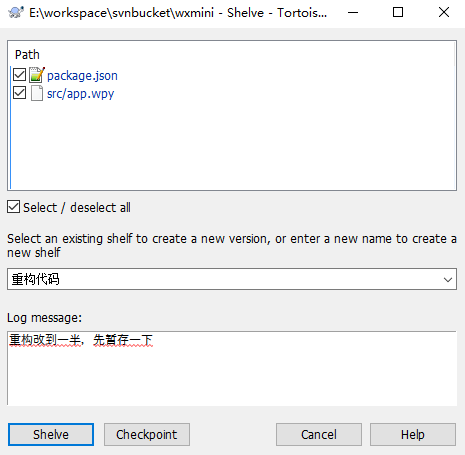
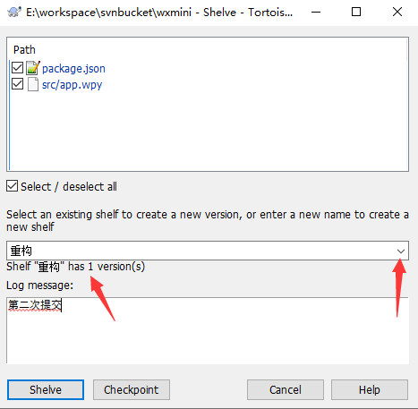

SVN 代码暂存Shelve的用法
2021年7月14日
代码写到一半，还不能提交代码，但需要紧急修复一个 Bug 并更新到服务器怎么办？把写到一半的代码丢弃？复制出来备份下？SVN的代码暂存是更好的选择。
本文为你讲解在 Windows 上，使用 TortoiseSVN 如何利用代码暂存功能保存我们暂时无法提交的代码。
暂存代码
代码暂存，英文叫 shelve，意思是置物架、搁置。
日常工作中经常会遇到需要暂时搁置写到一半的代码，然后去修复一个问题或开发另外一个更加紧急的功能。
使用 TortoiseSVN 非常方便，在目录下右键，选择 TortoiseSVN –> Shelve 就可以看到如下图，
上面部分是选择需要暂存的文件，中间是暂存的名字，以便后面恢复时明白存的是什么内容，
底部是填写暂存的描述信息，跟提交日志是一样的。
如果点击 Shelve 则会把选中的文件都暂存起来，并且把本地的修改全部撤销。
如果点击 Checkpoint，则只是暂存代码，本地的修改还是保留着。

暂存的版本管理
实际上，暂存就好像把代码提交到了你本地的一个临时仓库，也是有版本管理的，
如果你暂存时名字是选择一个已经存在的，则会生成一个新的版本号，跟 SVN 的代码提交是一样的。

取出暂存代码
取出也非常方便，在目录下右键，选择 TortoiseSVN –> Unshelve，我们可以选择取出哪个暂存代码，并且可以选择版本，如下图
取出后代码就恢复到我们之前的样子了。
代码暂存只是把代码临时存储到本地的一个地方了，并不会影响其他人。
如果你还有什么不明白，更详细的使用方法，可以看 视频教程